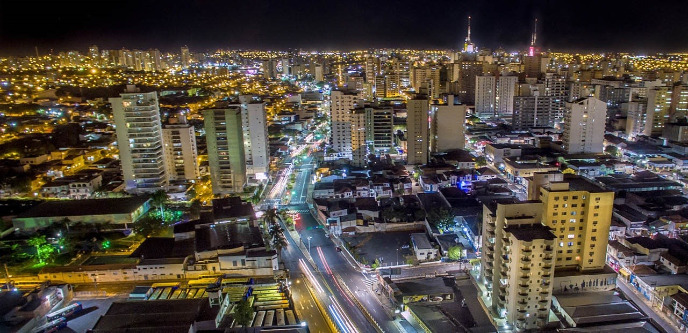

São José do Rio Preto é um importante polo regional no interior do estado, destacando-se pela qualidade de vida, estrutura de saúde e educação. A cidade vem investindo em tecnologia e conectividade, tornando-se um exemplo de cidade inteligente em soluções urbanas e sustentabilidade.
Entre os pontos turísticos, estão o Parque da Represa Municipal, o Zoológico Municipal e o Parque da Cidade. A cidade oferece vários espaços de lazer gratuitos, com áreas verdes e opções para caminhadas, piqueniques e esportes ao ar livre.
A gastronomia é rica em comidas típicas do interior paulista, como o tradicional churrasco e pratos com milho. Como curiosidade, Rio Preto é conhecida como a “Capital da Região Noroeste Paulista” e figura entre as cidades mais desenvolvidas do interior.
